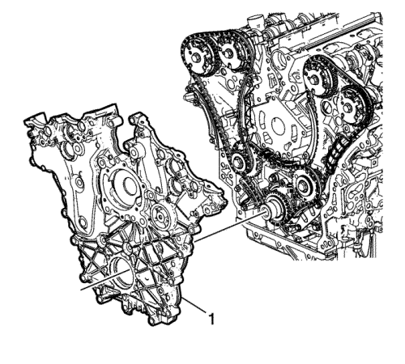
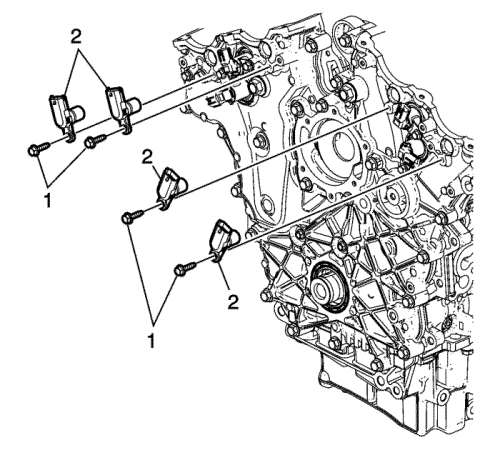

Montaje de la cubierta delantera del motor
Herramientas especiales
EN 46109 Pasadores guía
Si desea informarse sobre herramientas regionales equivalentes, consultar Herramientas especiales .
- Monte la guía de 8 mm (0,315 pulg.) de los pasadores EN 46109 en las posiciones del bloque motor del modo indicado.
- Monte la NUEVA cubierta delantera del motor en la junta del bloque motor.
Nota: No debería quedar a la vista el sellante RTV en los orificios de los pernos M12 (1) tras el montaje final de la tapa delantera en el motor.
- Aplique un cordón de 3 mm (0,118 pulg.) de sellador RTV en la cubierta delantera del motor del modo indicado (2). Aplique un cordón de 5 mm (0,197 pulg.) de sellador RTV en la cubierta delantera del motor del modo indicado (3). Consulte Adhesivos, líquidos, lubricantes y selladores para el sellador recomendado.

- Monte la cubierta delantera del motor (1) en los pasadores EN 46109 y desplácela hasta la posición correspondiente.
- Quite los pasadores EN 46109 del bloque motor.
- Apriete con la mano todos los pernos de la cubierta delantera del motor.
Precaución: Consulte Precaución con las fijaciones en la sección Prólogo
Nota: Los tornillos de la cubierta delantera del motor de la ubicación número (25) dependen del modelo y pueden no ser pertinentes.
- Apriete los tornillos de la tapa delantera del motor (1-23) en el orden indicado a 20 N·m (14 lib. pie).
| 7.1. | Apriete los tornillos de la tapa frontal del motor (1-23) una segunda tanda por orden hasta 20 N·m (14 lib. pie). |
| 7.2. | En un tercer paso, apriete en orden los tornillos de la cubierta delantera del motor (1-23) otros 60 grados. |
| 7.3. | Apriete los tornillos de la cubierta delantera del motor (24) a 15 N·m (11 lib. pie). |
| 7.4. | Apriete los tornillos de la cubierta delantera del motor (25) a 65 N·m (48 lib. pie). |

- Coloque las válvulas del actuador de posición del árbol de levas (2) en posición correcta en la cubierta delantera.
- Monte los tornillos de las válvulas de los actuadores de posición de los árboles de levas (1) y apriételos hasta 10 N·m (89 lib. pulg.).

- Coloque juntas tóricas NUEVAS en el sensor de posición del árbol de levas.
- Coloque los sensores de posición del árbol de levas (2) en posición correcta en la cubierta delantera.
- Monte los tornillos del sensor de posición del árbol de levas (1) y apriételos a 10 N·m (89 lib. pulg.).
| © Copyright Chevrolet Europe. All rights reserved |